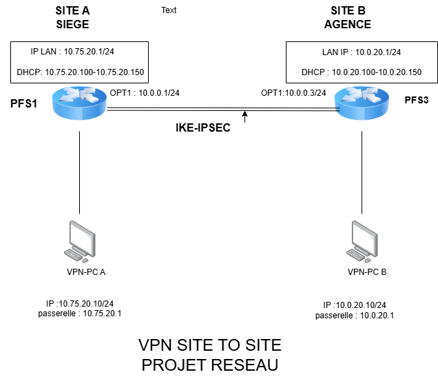

Interconnexion VPN Site-à-Site (Lien OPT1)

📝 Légendes techniques
- Lien d'interconnexion : Interface VPN (IPsec) via les interfaces OPT1.
- Adresses de peering (Transport) : PFS1 : 10.0.0.1/24 | PFS3 : 10.0.0.3/24
- Paramètres du Tunnel : Protocole IPsec (Site-to-Site).
- Authentification : Clé pré-partagée (PSK).
- Chiffrement : AES-256 bits / SHA-256.